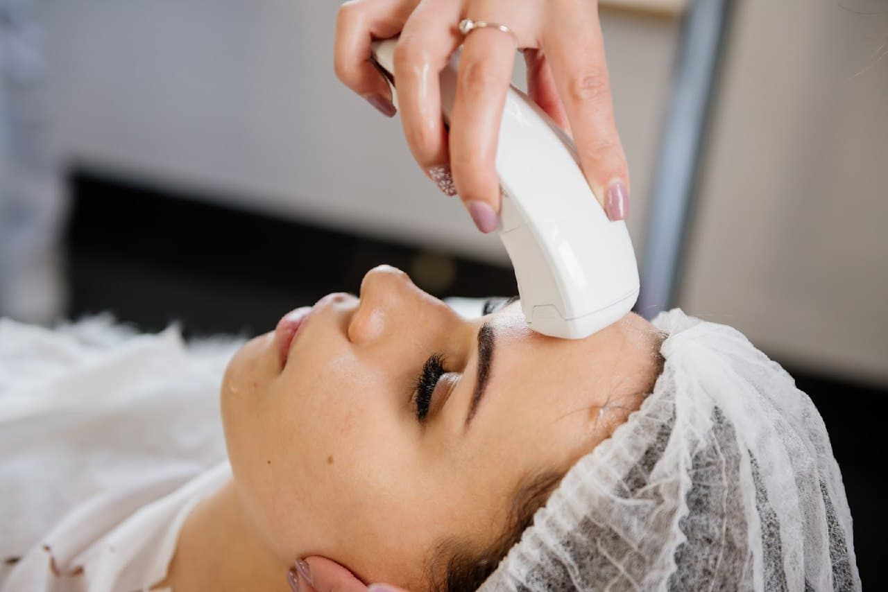

Аппаратный массаж
Аппаратный массаж лица
Хотите сохранить молодость лица дольше, тогда без аппаратного массажа лица вам не обойтись. Особенно, если вы не фанат различных инъекций и хирургического вмешательства.
Стресс, нездоровая еда, недосыпание, вредные привычки… Все это оставляет след на коже нашего лица и ему необходима помощь. Аппаратный массаж помогает не только омолодить, подтянуть кожу, но и избавиться от многих изъянов.
Давайте разбираться, в чем же его суть. Всем понятно, что аппаратный массаж лица осуществляется не руками непосредственно, а с использованием специального оборудования.

Что происходит с кожей лица после аппаратного массажа?
Сегодня аппаратный массаж лица делают не только те, кто борется с признаками старения, но и молодые девушки и парни, которые, хотят стимулировать мышцы лица, избавиться от отечности, вывести токсины и придать коже свежий, отдохнувший вид.
Вот перечень проблем, с которыми поможет справиться аппаратный массаж:
- Тусклый цвет лица;
- Вялость кожи;
- Признаки старения;
- Темные круги под глазами.;
- Выраженные носогубные складки;
- Мимические морщины;
- Второй подбородок.
Эффект от аппаратного лимфодренажного массажа лица
Аппаратный лимфодренажный массаж лица привлекателен ярко выраженным косметологическим эффектом, который заметен уже после первой процедуры и закрепляется после пройденного курса. Что же дает такой результат? В первую очередь происходит отток венозной крови и лимфы, что избавляет от покраснений и отёчности. Подтягиваются подкожные структуры, активизируется кровообращение и, как результат, легче воспринимается кислород.
Основные этапы манипуляции
Аппаратный массаж выполняется при помощи специальных устройств, оснащенных различными насадками.
Чтобы понять суть процедуры, стоит ознакомиться с ее основными этапами или технологией проведения:
- Первый этап заключается в подготовке кожи к манипуляции, то есть в ее тщательном очищении от любых загрязнений, а также макияжа. Как правило, используется косметическое молочко и тоник, подходящие по типу кожи.
- Второй этап начинается с воздействия на лимфоузлы при помощи специальной насадки аппарата. Выбирается работа в пульсирующем режиме, стимулируются области основных лимфатических узлов, которые в свою очередь улучшают и восстанавливают работу естественных систем, ответственных за обновление всего организма. В процессе такого воздействия происходит устранение спазмов.
- Третий этап манипуляции связан с осуществлением массажа от депрессии. Сначала он выполняется в пульсирующем режиме - прорабатываются области щек и подбородка. Затем аппарат переключают в рефлекторный режим, выявляющий и устраняющий все зоны напряжения. Далее аппарат переводят в режим вакуума, за счет чего происходит непосредственное воздействие на эпидермис. В процессе такой обработки кожа очищается от ороговевшего слоя, ускоряется процесс обновления клеток, устраняется второй подбородок.
- На четвертом этапе приступают к тонизированию кожи и коррекции морщин. Выбирается специальная насадка, воздействующая на ретикулярный слой дермы. В процессе обработки стимулируется выработка коллагеновых и эластиновых волокон, активизируются обменные процессы в клетках, включается механизм регенерации. Каждую морщину и складку обрабатывают не меньше 5 раз, в результате чего мелкие морщины разглаживаются, а глубокие становятся почти незаметными. На этом этапе также происходит моделирование овала лица, повышение тонуса и эластичности кожного покрова.
- Пятый этап связан с лимфодренажным воздействием, необходимым для активизации работы лимфатической системы и ускорения оттока лимфы. Результатом этого воздействия станет тонизирование стенок капилляров, вен, что в свою очередь повышает качество питания тканей, ускоряет микроциркуляцию крови, устраняет отечность, темные круги под глазами.
- Шестой этап подразумевает нанесение маски, которую выбирает косметолог каждому пациенту индивидуально, в зависимости от проблем и дефектов его кожи. Действие маски в этот момент будет невероятно эффективным, поскольку кожа сможет принять все, входящие в ее состав полезные компоненты и доставить их к глубоким слоям.
- Заключительный седьмой этап необходим для защиты кожной поверхности после проведенной манипуляции и закрепления полученных результатов. Он выполняется посредством нанесения на обработанную в процессе массажа кожу равномерного слоя крема, подходящего по ее типу и возрасту. Желательно, чтобы в его составе присутствовали солнцезащитные фильтры, предотвращающие негативное воздействие ультрафиолетового излучения.
Косметолог может по своему усмотрению корректировать этапы выполнения аппаратного массажа в зависимости от степени усугубления возрастных изменений и наличия других дефектов кожи каждому отдельному пациенту.